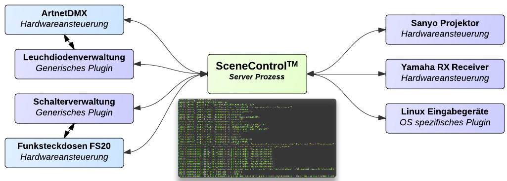

SceneControl 
Leicht zu bedienende Steuerungssoftware für eine einfach erweiterbare Heimautomatisierung.
Latest Commits
Steuerungssoftware für Heimautomatisierung
SceneControl erfüllt Heimautomatisierungsaufgaben über eine robuste Prozess/Plugin Architektur. Ein Always-ON System wie z.B. der Rasberry PI wird vorausgesetzt. Über einen Editor im Webbrowser werden einfach Ereignisse, Bedingungen und Aktionen über Szenen verknüpft. Einige Plugins, sowie die Basisfunktionalität von SceneControl kann von einer Android App gesteuert werden.
| Anwendungsgebiete | Eigenschaften |
|---|---|
|
|
Prozess-Architektur
Der ausführende Kernprozess, im Schaubild mittig dargestellt, wird im weiteren SceneServer genannt. Dieser Kernprozess ist sehr minimalistisch konstruiert um die Fehleranfälligkeit zu minimieren. Die Datenhaltung läuft in diesem Prozesskontext, der Kommando-Socket und ein Thread-Pool für aktuell ausgeführte Szenen. Die eigentliche Funktionalität wird über Pluginprozesse bereitgestellt. In der Grafik sind diese um den Kernprozess herum skizziert. Pluginprozesse können untereinander kommunizieren (Abhängigkeitsverhältnis).
Ladevorgang
Der SceneServer baut nach dem Start eine Verbindung zur Datenhaltung auf und fordert Plugin Konfigurationen an. Eine Plugin Konfiguration besteht aus genau den Parametern um eine neue Plugin Instanz zu starten. Eine Plugin Instanz ist ein eigenständiger Systemprozess. Stürzt ein solcher Prozess ab, etwa weil die Hardware nicht wie erwartet reagiert, hat das keine negativen Konsequenzen für den SceneServer.
Aus der Datenhaltung werden anschließend alle Szenen angefordert und in ausführbare Objekte überführt. Alle auf diesen Szenen registrierten Ereignisse werden bei den zuständigen Plugin-Instanzen registriert.
Ausführung
Sobald ein registriertes Ereignis eintritt, wird der SceneServer kontaktiert und die mit dem Ereignis verbundene Szene wird ausgeführt.
Durch die Trennung in Prozesse mit fest gelegtem, eingegrenztem Aufgabenbereich ist die Ausfallsicherheit der gesamten Architektur besonders hoch und für den 24/7 Betrieb ausgelegt.
Steuerung über Kommando-Socket
Über einen TCP Port i.d.R. Port 3101 können per JSON kodierte Nachrichten an den Prozess abgesetzt werden. Der Server selber bietet dabei keine Session- oder Sicherheitsverwaltung. Diese Funktionalitäten können mit zusätzlichen Proxy Prozessen abgedeckt werden.

SessionProxy
Der SessionProxy handelt mit dem SceneServer einen neuen Port für das JSON Kommandointerface aus und öffnet selber den JSON Kommandointerface Port. Somit werden effektiv alle neuen Verbindungen über den SessionProxy ablaufen. Alle Verbindungen erfordern ab dann eine Authentifizierung gegenüber den auf dem Betriebssystem vorhandenen Benutzern. Zugriffsrechte werden durch Gruppenmitgliedschaften des angegeben Benutzers geregelt und müssen in der SessionProxy Konfiguration gesondert angegeben werden. Ein Beispiel: Ein Nutzer wählt über die Android App eine Szene zur Ausführung aus. Der SessionProxy wird diese Ausführungsanfrage nur an den SceneServer weiterleiten, wenn der Nutzer sich als "{NUTZER}" beim Start der Android App authorisiert hat.
Websocketsproxy
Über den Websocketsproxy können sich Webclients über das WebSocket Protokoll mit dem SceneServer verbinden und das JSON Kommandointerface des SceneServers nutzen.
Kommunikation: Plugin <-> Plugin <-> SceneServer
Plugins sind als eigene Prozesse modelliert, welche selbstständig eine Kommunikationsverbindung zum Server aufbauen müssen. Da viele Qt Container und Basisklassen serialisiert werden können, wird ein einfaches QDataStream basiertes Protokoll für die Kommunikation zwischen Plugin Prozess und SceneServer verwendet. Unter Windows werden NamedPipes, unter Linux/MacOS UnixSockets verwendet. Plugins können Eigenschaften (properties) besitzen und auf Eigenschaftsänderungen des Servers oder anderer Plugins reagieren. Für C++ Plugins gibt es ein PluginInterface, welches zu implementieren ist. Theoretisch können auch andere Programmiersprachen für Plugins verwendet werden.
Datenhaltung
Ereignisse, Bedingungen, Aktionen und Szenen werden als JSON Objekte direkt auf dem Dateisystem hinterlegt. Die Datenspeicherung ist durch eine eigene Bibliothek gekapselt um einen leichten Austausch durch andere Technologien zu ermöglichen. Die Speicherung auf dem Dateisystem bietet jedoch bereits das Erfassen von Änderungen der Daten durch Drittanwendungen sowie die Nutzung üblicher Dateiverwaltungswerkzeuge. Manuelles Replizieren sowie regelmäßige Sicherungen können auf Dateiebene genutzt werden (Dropbox, github, ...).
Szenen
Eine Szene definiert sich durch einen Namen, gfs. zugewiesene Kategorien und Szenenelementen. Szenenelemente sind Ereignisse, Bedingungen und Aktionen, welche als gerichteter Graph organisiert sind. Ein Graph enthält Knoten und Kanten, welche die Knoten verbinden. Übertragen auf eine Szene sind dadurch i.d.R. Ereignisse über Kanten mit Bedingungen verknüpft, welche wiederum mit Aktionen verbunden sind. Eine solche Kette von Szenenelementen heißt hier Ereigniskette.
Eine Ereigniskette kann Verzweigungen besitzen, also von einem Element kann diese zu zwei oder mehr Elementen weiterführen. Eine Szene kann mehrere Ereignisketten enthalten. Weiter oben wurde festgestellt, dass eine Szene bei Eintritt eines seiner Ereignisse ausgeführt wird. Tatsächlich wird aber nur die Ereigniskette ab dem Punkt abgearbeitet, wo sich dieses Ereignis befindet.
Ein Beispiel: Ein Ereignis kann das Eintreten eines gewissen Zeitpunktes sein, eine daran angebundene Bedingung könnte einen Steckdosenzustand prüfen, eine darauf folgende Aktion löst etwa das Ändern der Lichwerte von Leuchtdioden aus.
Grafisches Programm zur Verwaltung von Szenen:
Um Ereignisse, Bedingungen und Aktionen in Szenen grafisch zu gestalten befindet sich eine Webbrowser Anwendung im Ordner "htmleditor". Der SceneServer und der WebSocketProxy müssen laufen.

Mitgelieferte Plugins
| Name | Typ | Beschreibung |
|---|---|---|
| Leds | Generisch | Generisches Leuchtdioden Plugin zur Verwaltung aller angemeldeten Leuchtdioden. |
| Schalter | Generisch | Generisches Schalter Plugin zur Verwaltung aller angemeldeten Schalter. |
| Time | Generisch | Bietet feste und periodische Zeitereignisse an. |
| WOL | Generisch | Wakeup on lan. Ermöglicht das starten eines über die angegebene MAC festgelegten PCs. |
| DMX/ArtNet | Hardware | Erlaubt die Steuerung von konfigurierten DMX Lampen über das Leds Plugin. Verwendet ArtNet, also ist eine Hardware Umsetzung IP-->DMX notwendig. |
| Linux Input Events | OS Abhängig | Tastenereignisse vom Linux Input Framework (etwa usb Fernbedienungen, Tastaturen). |
| MPD | Softwarespezifisch | Steuert den Music Player Daemon. |
| XBMC | Softwarespezifisch | Steuert das XBox Media Center. |
| Pulseaudio | Softwarespezifisch | Steuert Lautstärkekanäle des Pulseaudio daemons. |
Software bauen
Es wird CMake (www.cmake.org) benötigt. Im CMake-Gui Programm kann grafisch der Quellcodeordner und ein davon unabhängiger BUILD-Ordner angegeben werden. CMake versucht alle benötigten Abhängigkeiten und den angegebenen C++ Compiler zu finden. Im nachfolgendem Abschnitt sind die Abhängigkeiten noch einmal aufgeführt. Nach dem Generierungsschritt liegen (je nach Auswahl) Visual Studio Projektdateien, Makefiles, usw vor.
Unter Windows: Hier wird VisualStudio 10+ empfohlen. Auf der Konsole kann nmake verwendet werden, ansonsten lässt sich das Projekt auch mit der VS IDE bauen.
Unter Linux: Hier bietet sich das Erstellen lassen von Makefiles an. Anschließend in den BUILD-Ordner wechseln und den Befehl "make" ausführen. Um ein Deb Packet generieren zu lassen den Befehl "make package" nutzen.
Abhängigkeiten
| Name | Ubuntu Paket | Beschreibung | Komponenten |
|---|---|---|---|
| Qt4 | libqt4-dev | Qt4 Framework | Kernprozess |
| SSL | libssl-dev | Sichere Verbindung | Kernprozess, Kontrollsocket |
| PAM | libpam0g-dev | Benutzerauthentifizierung | SessionProxy |
| Pulseaudio | libpulse-dev | Pulseaudio | Plugin: Pulseaudio |
| UDEV | libudev-dev | Linux Input Events | Plugin: Linux_input_events |
Weiterentwicklung:
| Zeitraum | Komponente | Beschreibung |
|---|---|---|
| 1. Quartal 2013 | Plugin: dmx/artnet | libartnet Unterstützung um DMX Lampen nutzen zu können |
| 1. Quartal 2013 | Build Scripts | Script um 3rd Party Repositories vor dem Build zu integrieren |
| 1. Quartal 2013 | Build Scripts | Ubuntu PPA Build einrichten |
| 2. Quartal 2013 | Dokumentation | Strukturierte Webseite, Anleitungen, Architekturschaubilder, Screenshots |
| 2. Quartal 2013 | SessionProxy | Authentifizierung für den Control Socket |
| 2. Quartal 2013 | Android App | Modulare Plugin Unterstützung statt monolitischer Block |